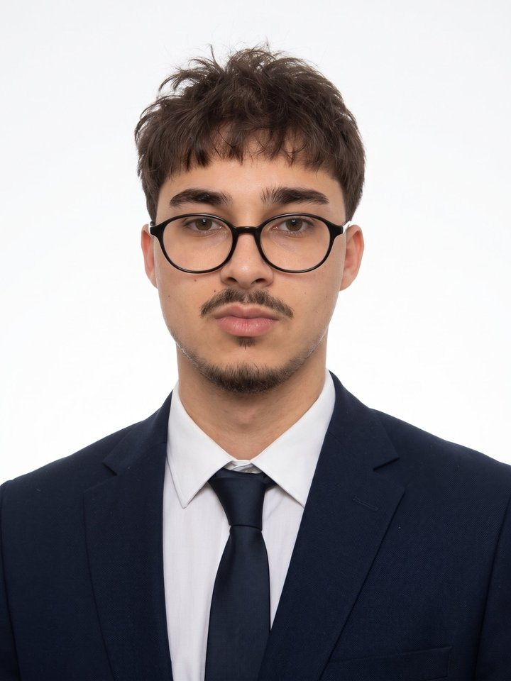

Hakkımda

2006 yılında Manisa’da doğdum, İzmir’de büyüdüm. Şu anda Antalya’da Akdeniz Üniversitesi Bilgisayar Programcılığı bölümünde 2. sınıf öğrencisi olarak eğitimime devam ediyorum. Yazılım geliştirme süreçlerinde hem işin mutfağındaki arka plan (backend) mimarisiyle hem de kullanıcının dokunduğu görsel arayüz (frontend ve UI/UX) kısmıyla ilgileniyorum. Kod yazmanın dışında video prodüksiyonu, grafik animasyon ve iş akışı otomasyonlarıyla (n8n, yerel AI modelleri) uğraşmayı seviyorum.
Eğitim
Akdeniz Üniversitesi, Bilgisayar Programcılığı (Önlisans, 2025 – devam ediyor). 1. sınıf AGNO: 3.0+
İlgi alanları
Vücut geliştirme ve ağırlık antrenmanları, yüzme (serbest ve sırtüstü), judo (mavi kuşak), tenis, müzik prodüksiyonu ve vokal kayıt (BandLab), sokak modası (streetwear).
Yetenekler
Yazılım ve webC#, ASP.NET Core MVC, Python, JavaScript, HTML5, CSS3, C++, Delphi, SQL Server (T-SQL), WordPress (Polylang)
Tasarım ve medyaAdobe Photoshop, Adobe Premiere Pro, Adobe Animate, UI/UX Design
Sistem ve otomasyonn8n Workflow Automation, Local AI Deployment (Ollama), Basecamp